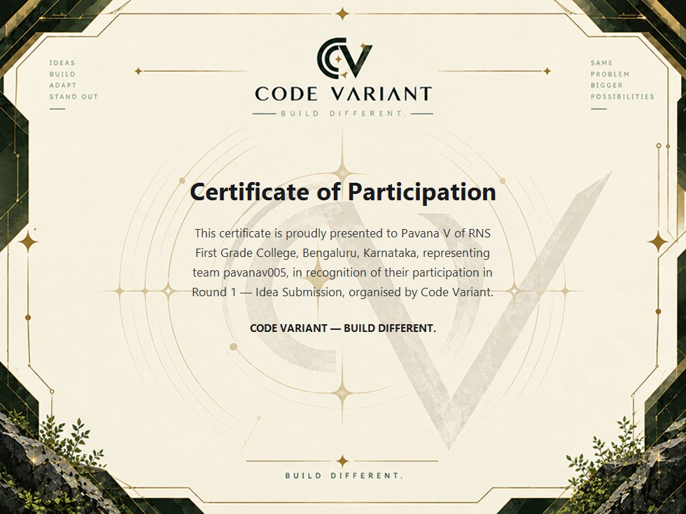
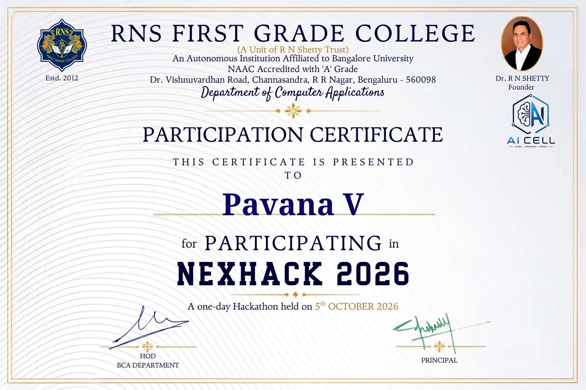
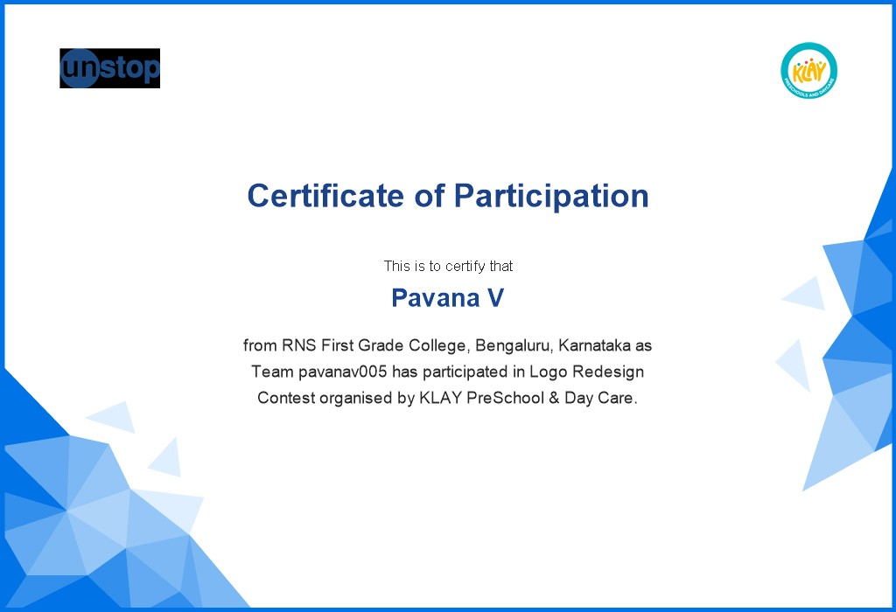
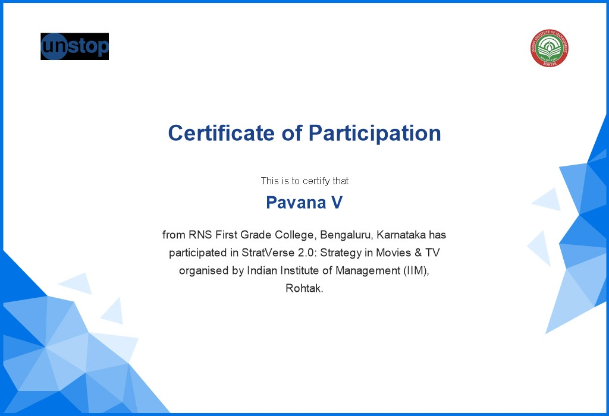

Hi, I'm PAVANA V.
Software Developer | AI, Cloud & Emerging Technologies
Engineering resilient digital architectures and intelligent software at the intersection of Artificial Intelligence, Cloud Infrastructure, and Emerging Technologies. Turning complex challenges into performant, practical solutions through curiosity, rapid experimentation, and continuous growth.
while (learning) { build(); experiment(); improve(); }
ABOUT
Designing resilient digital systems, exploring intelligent automation, and engineering solutions to tangible real-world problems.
At the intersection of insatiable curiosity and engineering discipline, I build software that transforms emerging technological potential into tangible, real-world systems. Focusing on Artificial Intelligence, scalable cloud infrastructure, and modern software architecture, I thrive on exploring innovative paradigms, experimenting with emerging tools, and turning complex challenges into practical opportunities.
My technical foundations bridge machine learning pipelines, computer networking, and resilient cloud infrastructure. Rather than viewing tools in isolation, I approach software engineering through rapid prototyping, architectural rigor, and active collaboration—grounding theoretical concepts into dependable, high-performance systems designed for real-world impact.
Whether engineering intelligent computer vision models, optimizing relational database schemas, or orchestrating secure network topologies, my focus is always on delivering code that is performant, modular, and built to empower people.
Pavana V
Software Developer | AI, Cloud & Emerging Technologies
Skills & Technologies
Core programming disciplines, cloud infrastructure, AI models, and collaborative soft skills.
Programming Languages
AI & Data Science
Cloud & Networking
Web & Backend
CS Core (BCA)
Soft Skills & Collaboration
Education & Foundations
Bachelor of Computer Applications (BCA)
RNS First Grade College, Bengaluru • Affiliated to Bangalore University
Comprehensive 3-year undergraduate program providing deep theoretical grounding, algorithmic problem-solving rigor, and extensive laboratory engineering experience across modern computing systems.
Pre-University Course (PUC • PCMC)
Surana Independent PU College, Bengaluru
Pre-university coursework in Physics, Chemistry, Mathematics, and Computer Science (PCMC), securing 74% while building strong analytical thinking, mathematical foundations, and core programming concepts.
Secondary School Leaving Certificate (10th / SSLC)
Carmel Public School, Kengeri, Bengaluru
Completed secondary school education with 77%, developing a disciplined academic foundation in mathematics, science, logical inquiry, and introduction to computing fundamentals.
Projects & Software Innovations
Algorithmic systems, interactive learning platforms, and application architectures engineered to solve real-world challenges.
TRAFFIQ — AI-Based Traffic Signal Optimizer
AUTONOMOUS VEHICLE DENSITY ESTIMATION • ADAPTIVE CYCLE ALLOCATION ENGINE
TRAFFIQ is an algorithmic traffic control and signal optimization engine designed to dynamically resolve commuter delays. By replacing rigid, pre-timed sequences with continuous directional density evaluation, TRAFFIQ calculates real-time lane queue depth and dynamically reallocates proportional green intervals to saturated corridors while enforcing guaranteed pedestrian crossing bounds.
Core Logic: Replaces rigid timers with mathematical delay minimization. Green light duration is dynamically calculated and allocated based on real-time lane queue density.
Copt = (1.5L + 5) / (1 - Y)
Calculates total cycle time to minimize overall intersection delay
gi = (yi / Y) × (C - L)
Allocates green duration proportionally to lane queue depth
Core System Architecture & Engineered Capabilities
ALGOrise — Algorithmic Learning & Visual Execution Platform
INTERACTIVE DSA VISUALIZER • CALL-STACK & HEAP SIMULATION ENGINE
An interactive algorithm visualization and learning hub engineered to deconstruct complex data structures, graph traversals, and dynamic programming patterns into intuitive visual steps, call-stack unfolds, and real-time memory allocations.
Frame-by-frame visual tracing of Sorting (Quick/Merge/TimSort), Tree Balancing (AVL & Red-Black rotations), and Graph Flow (Dijkstra, A*, Tarjan's SCC).
Live Big-O performance charting benchmarking execution steps, heap allocations, and cache hits vs input size ($n = 10 \to 10^5$).
Side-by-side implementations in Python, Java, and C++ with synchronized line highlighting, call-stack tracking, and automated edge-case fuzzing.
App Autopsy — Application Architecture & System Deconstructor
REVERSE-ENGINEERING ENGINE • NETWORK WATERFALL & QUERY BOTTLENECK AUDITOR
A rigorous system architecture framework and analytical tool for dissecting production applications—evaluating UI component trees, API payload compression, network waterfall latencies, caching policies, and SQL query efficiency.
Deconstructs production frontend bundles into interactive dependency trees, isolating bundle chunk bloat and re-render cascade anomalies.
Profiles HTTP/2 & HTTP/3 requests, REST/GraphQL payload sizes, compression ratios (Brotli vs Gzip), and ETag cache compliance.
Simulates real query workloads to uncover N+1 query loops, unindexed table scans, connection pool starvation, and single points of failure.
Certifications & Training
Authentic, industry-verified credentials in artificial intelligence, enterprise networking, data engineering, cloud architecture, and systems foundations.
CCNA Certificate of Training
Netcraftz • Govt of Karnataka & Skill India Authorized Partner
Rigorous training covering Cisco networking architecture, IP addressing, subnetting, routing protocols, switching, NAT, ACLs, and network security foundations.
AI Literacy
IBM SkillsBuild • Official Digital Credential
Foundational credential validating core competencies in Artificial Intelligence architectures, neural network concepts, machine learning models, generative AI paradigms, and ethical AI governance standards.
Data Fundamentals
IBM SkillsBuild • Official Digital Credential
Industry certification verifying foundational knowledge of relational database structures, data processing lifecycles, data cleansing, statistical modeling principles, and enterprise data security governance.
Introduction to Amazon EC2
AWS Training & Certification • Completion Certificate
Comprehensive training on Elastic Compute Cloud (EC2) virtual machines, compute instance types, Elastic Block Store (EBS), Elastic IP addressing, security groups, and automated scaling.
Introduction to Amazon VPC
AWS Training & Certification • Completion Certificate
Specialized coursework on Amazon Virtual Private Cloud (VPC), architecting logically isolated cloud networks, CIDR block allocation, public & private subnets, Internet Gateways, Route Tables, and Network ACLs.
Cloud Computing on AWS for Beginners
Udemy • Digital Cloud Training • Instructor: Neal Davis
Deep hands-on immersion into the AWS cloud ecosystem, architectural best practices, global infrastructure, IAM governance, storage tiering with S3, and highly available multi-tier deployments.
Introduction to Operating Systems
IIT Madras / NPTEL • Ministry of Education, Govt of India
Comprehensive university-level examination of operating system kernels, CPU scheduling, thread synchronization, deadlocks, virtual memory, paging, and file management.
Participation Certificates
Verified certificates of participation awarded for competitive engineering hackathons, rapid prototyping, and national case-solving challenges.

Code Variant — Certificate of Participation
Code Variant • Round 1: Idea Submission • Build Different
Official participation certificate awarded to Pavana V of RNS First Grade College, representing team pavanav005, in recognition of active participation in Round 1 — Idea Submission organized by Code Variant.

NexHack 2026 Participation Certificate
RNS First Grade College • Dept of Computer Applications & AI Cell
Official participation certificate awarded to Pavana V for demonstrating rapid prototyping, engineering problem-solving, and team collaboration in NexHack 2026.

KLAY PreSchool — Logo Redesign Contest
KLAY PreSchool & Day Care • Organised via Unstop
Official participation certificate awarded to Pavana V of RNS First Grade College, Bengaluru, representing Team pavanav005 in the Logo Redesign Contest organized by KLAY PreSchool & Day Care on Unstop.

StratVerse 2.0: Strategy in Movies & TV
Indian Institute of Management (IIM), Rohtak • Unstop
Official participation certificate awarded to Pavana V of RNS First Grade College, Bengaluru, for participating in StratVerse 2.0: Strategy in Movies & TV organized by the Indian Institute of Management (IIM), Rohtak on Unstop.
LET'S BUILD SOMETHING MEANINGFUL.
Whether you're interested in discussing software engineering, artificial intelligence, technical projects, or emerging technologies, I'd love to connect.